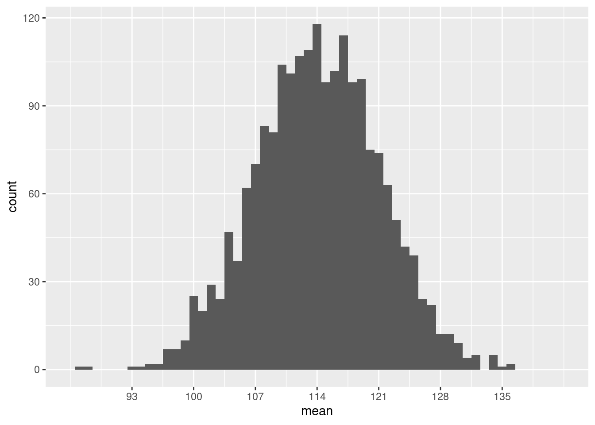
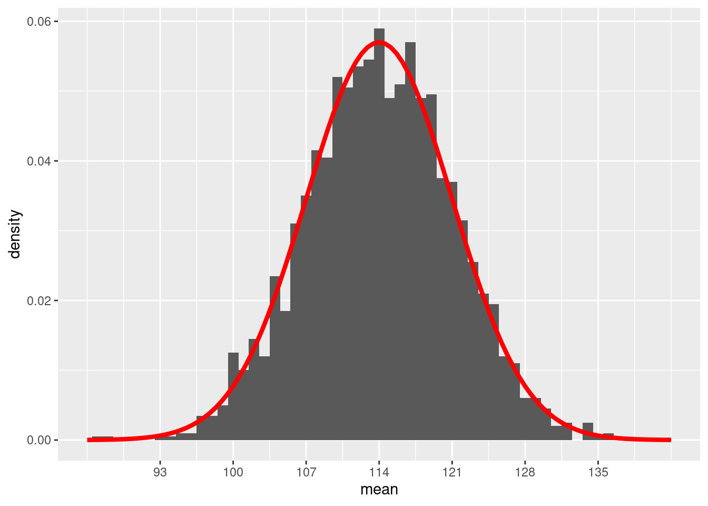
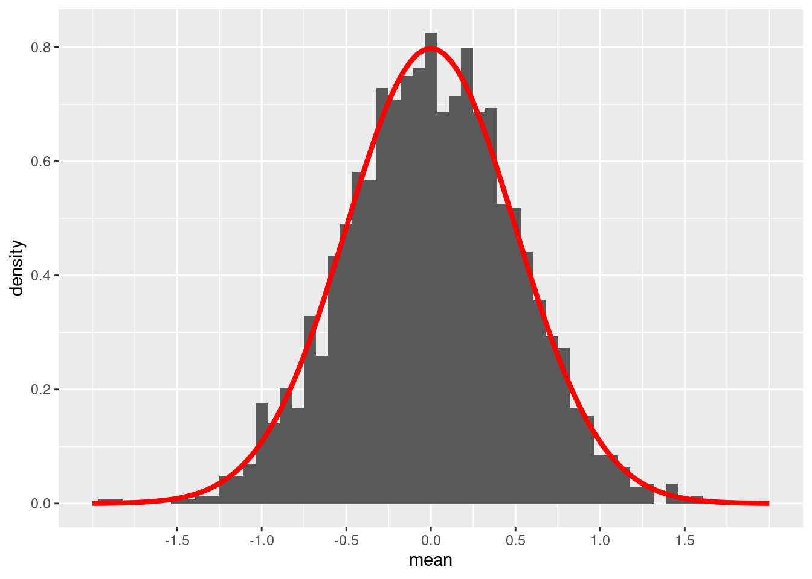
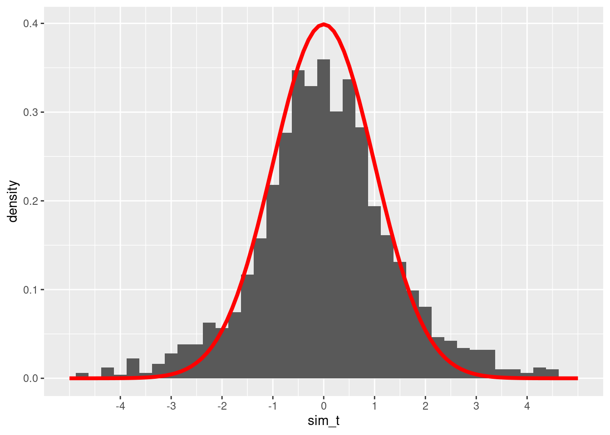
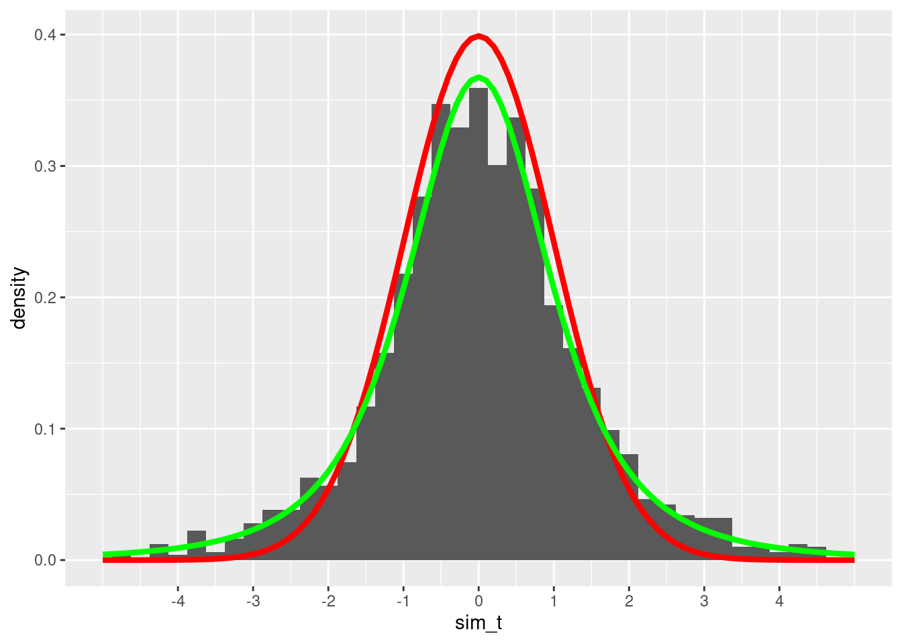
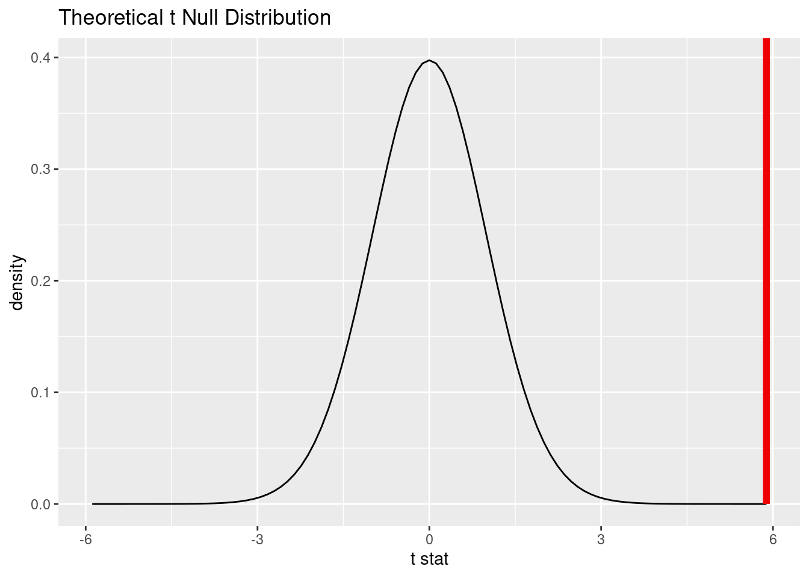

Once the file is downloaded, move it to your project folder in RStudio and open it there.
19.1.3 Restart R and run all chunks
In RStudio, select “Restart R and Run All Chunks” from the “Run” menu.
19.2 Load packages
We load the standard tidyverse and infer packages as well as the mosaic package to run some simulation. The openintro package contains the teacher data and the hsb2 data.
library(tidyverse)
── Attaching core tidyverse packages ──────────────────────── tidyverse 2.0.0 ──
✔ dplyr 1.1.4 ✔ readr 2.1.5
✔ forcats 1.0.0 ✔ stringr 1.5.1
✔ ggplot2 3.5.1 ✔ tibble 3.2.1
✔ lubridate 1.9.4 ✔ tidyr 1.3.1
✔ purrr 1.0.2
── Conflicts ────────────────────────────────────────── tidyverse_conflicts() ──
✖ dplyr::filter() masks stats::filter()
✖ dplyr::lag() masks stats::lag()
ℹ Use the conflicted package (<http://conflicted.r-lib.org/>) to force all conflicts to become errors
library(infer)library(mosaic)
Registered S3 method overwritten by 'mosaic':
method from
fortify.SpatialPolygonsDataFrame ggplot2
The 'mosaic' package masks several functions from core packages in order to add
additional features. The original behavior of these functions should not be affected by this.
Attaching package: 'mosaic'
The following object is masked from 'package:Matrix':
mean
The following objects are masked from 'package:infer':
prop_test, t_test
The following objects are masked from 'package:dplyr':
count, do, tally
The following object is masked from 'package:purrr':
cross
The following object is masked from 'package:ggplot2':
stat
The following objects are masked from 'package:stats':
binom.test, cor, cor.test, cov, fivenum, IQR, median, prop.test,
quantile, sd, t.test, var
The following objects are masked from 'package:base':
max, mean, min, prod, range, sample, sum
library(openintro)
Loading required package: airports
Loading required package: cherryblossom
Loading required package: usdata
Attaching package: 'openintro'
The following object is masked from 'package:mosaic':
dotPlot
The following objects are masked from 'package:lattice':
ethanol, lsegments
19.3 Simulating means
Systolic blood pressure (SBP) for women in the U.S. and Canada follows a normal distribution with a mean of 114 and a standard deviation of 14.
Suppose we gather a random sample of 4 women and measure their SBP. We can simulate doing that with the rnorm command:
set.seed(5151977)SBP_sample <-rnorm(4, mean =114, sd =14)SBP_sample
[1] 99.75130 126.47739 99.53632 115.05247
We summarize our sample by taking the mean and standard deviation:
mean(SBP_sample)
[1] 110.2044
sd(SBP_sample)
[1] 13.05615
The sample mean \(\bar{y}\) = 110.2043696 is somewhat close to the true population mean \(\mu = 114\) and the sample standard deviation \(s\) = 13.0561519 is somewhat close to the true population standard deviation \(\sigma = 14\). (\(\mu\) is the Greek letter “mu” and \(\sigma\) is the Greek letter “sigma”.)
Let’s simulate lots of samples of size 4. For each sample, we calculate the sample mean.
set.seed(5151977)sims <-do(2000) *mean(rnorm(4, mean =114, sd =14))sims
Again, we see that the sample means are close to 114, but there is some variability. Naturally, not every sample is going to have an average of exactly 114. So how much variability do we expect? Let’s graph and find out. We’re going to set the x-axis manually so that we can do some comparisons later.
Warning: Removed 2 rows containing missing values or values outside the scale range
(`geom_bar()`).

Most sample means are around 114, but there is a good range of possibilities from around 93 to 135. The population standard deviation \(\sigma\) is 14, but the standard deviation in this graph is clearly much smaller than that. (A large majority of the samples are within 14 of the mean!)
With some fancy mathematics, one can show that the standard deviation of this sampling distribution is not \(\sigma\), but rather \(\sigma/\sqrt{n}\). In other words, this sampling distribution of the mean has a standard error of
This makes sense: as the sample size increases, we expect the sample mean to be more and more accurate, so the standard error should shrink with large sample sizes.
Let’s re-scale the y-axis to use percentages instead of counts. Then we should be able to superimpose the normal model \(N(114, 7)\) to check visually that it’s the right fit.
# Don't worry about the syntax here.# You won't need to know how to do this on your own.ggplot(sims, aes(x = mean)) +geom_histogram(aes(y =after_stat(density)), binwidth =1) +scale_x_continuous(limits =c(86, 142),breaks =c(93, 100, 107, 114, 121, 128, 135)) +stat_function(fun = dnorm, args =list(mean =114, sd =7),color ="red", size =1.5)
Warning: Using `size` aesthetic for lines was deprecated in ggplot2 3.4.0.
ℹ Please use `linewidth` instead.
Warning: Removed 2 rows containing missing values or values outside the scale range
(`geom_bar()`).

Looks pretty good!
All we do now is convert everything to z scores. In other words, suppose we sample 4 individuals from a population distributed according to the normal model \(N(0, 1)\). Now the standard error of the sampling distribution is
The following code will accomplish all of this. (Don’t worry about the messy syntax. All I’m doing here is making sure that this graph looks exactly the same as the previous graph, except now centered at \(\mu = 0\) instead of \(\mu = 114\).)
# Don't worry about the syntax here.# You won't need to know how to do this on your own.sims_z <-data.frame(mean =scale(sims$mean,center =114, scale =14))ggplot(sims_z, aes(x = mean)) +geom_histogram(aes(y =after_stat(density)), binwidth =1/14) +scale_x_continuous(limits =c(-2, 2),breaks =c(-1.5, -1, -0.5, 0, 0.5, 1, 1.5)) +stat_function(fun = dnorm, args =list(mean =0, sd =0.5),color ="red", size =1.5)
Warning: Removed 2 rows containing missing values or values outside the scale range
(`geom_bar()`).

Remember that this is not the standard normal model \(N(0, 1)\). The standard deviation in the graph above is not 1, but 0.5 because that is the standard error when using samples of size 4. (\(1/\sqrt{4} = 0.5\).)
19.4 Unknown standard errors
If we want to run a hypothesis test, we will have a null hypothesis about the true value of the population mean \(\mu\). For example,
\[
H_{0}: \mu = 114
\]
Now we gather a sample and compute the sample mean, say 110.2043696. We would like to be able to compare the sample mean \(\bar{y}\) to the hypothesized value 114 using a z score:
However, we have a problem: we usually don’t know the true value of \(\sigma\). In our SBP example, we do happen to know it’s 14, but we won’t know this for a general research question.
The best we can do with a sample is calculate this z score replacing the unknown \(\sigma\) with the sample standard deviation \(s\), 13.0561519. We’ll call this a “t score” instead of a “z score”:
The problem is that \(s\) is not a perfect estimate of \(\sigma\). We saw earlier that \(s\) is usually close to \(\sigma\), but \(s\) has its own sampling variability. That means that our earlier simulation in which we assumed that \(\sigma\) was known and equal to 14 was wrong for the type of situation that will arise when we run a hypothesis test. How wrong was it?
19.5 Simulating t scores
Let’s run the simulation again, but this time with the added uncertainty of using \(s\) to estimate \(\sigma\).
The first step is to write a little function of our own to compute simulated t scores. This function will take a sample of size \(n\) from the true population \(N(\mu, \sigma)\), calculate the sample mean and sample standard deviation, then compute the t score. Don’t worry: you won’t be required to do anything like this on your own.
# Don't worry about the syntax here.# You won't need to know how to do this on your own.sim_t <-function(n, mu, sigma) { sample_values <-rnorm(n, mean = mu, sd = sigma) y_bar <-mean(sample_values) s <-sd(sample_values) t <- (y_bar - mu)/(s /sqrt(n))}
Now we can simulate doing this 2000 times.
set.seed(5151977)sims_t <-do(2000) *sim_t(4, mu =114, sigma =14) sims_t
Let’s plot our simulated t scores alongside a normal distribution.
# Don't worry about the syntax here.# You won't need to know how to do this on your own.ggplot(sims_t, aes(x = sim_t)) +geom_histogram(aes(y =after_stat(density)), binwidth =0.25) +scale_x_continuous(limits =c(-5, 5),breaks =c(-4, -3, -2, -1, 0, 1, 2, 3, 4)) +stat_function(fun = dnorm, args =list(mean =0, sd =1),color ="red", size =1.5)
Warning: Removed 19 rows containing non-finite outside the scale range
(`stat_bin()`).
Warning: Removed 2 rows containing missing values or values outside the scale range
(`geom_bar()`).

These t scores are somewhat close to the normal model we had when we knew \(\sigma\), but the fit doesn’t look quite right. The peak of the simulated values isn’t quite high enough, and the tails seem to spill out over the much thinner tails of the normal model.
William Gosset figured this all out in the early 20th century. While working for the Guinness brewery in Dublin, Ireland, he started noticing that his quality control tests (using very small sample sizes) didn’t yield statistical results consistent with the normal models that were universally used at the time. At the encouragement of the company, which saw his work as a potential source of cost savings, he took some time off to study and consult with other statisticians. As a result, he found a new function that is similar to a normal distribution but is more spread out. This new function accounts for the extra variability one gets when using the sample standard deviation \(s\) as an estimate for the true population standard deviation \(\sigma\). Guinness considered the result a “trade secret”, so they wouldn’t allow Gosset to publish under his own name. But they did permit him to publish his findings under the pseudonym “Student.” He used data sets unrelated to brewing and submitted his work to the top statistical journal of the time.
The new function Gosset discovered became known as the Student t distribution. He realized that the spread of the t distribution depends on the sample size. This makes sense: the accuracy of \(s\) will be greater when we have a larger sample. In fact, for large enough samples, the t distribution is very close to a normal model.
Gosset used the term degrees of freedom to describe how the sample size influences the spread of the t distribution. It’s somewhat mathematical and technical, so suffice it to say here that the number of degrees of freedom is simply the sample size minus 1:
\[
df = n - 1.
\]
So, is the t model correct for our simulated t scores? Our sample size was 4, so we should use a t model with 3 degrees of freedom. Let’s plot it in green on top of our previous graph and see:
# Don't worry about the syntax here.# You won't need to know how to do this on your own.ggplot(sims_t, aes(x = sim_t)) +geom_histogram(aes(y =after_stat(density)), binwidth =0.25) +scale_x_continuous(limits =c(-5, 5),breaks =c(-4, -3, -2, -1, 0, 1, 2, 3, 4)) +stat_function(fun = dnorm, args =list(mean =0, sd =1),color ="red", size =1.5) +stat_function(fun = dt, args =list(df =3),color ="green", size =1.5)
Warning: Removed 19 rows containing non-finite outside the scale range
(`stat_bin()`).
Warning: Removed 2 rows containing missing values or values outside the scale range
(`geom_bar()`).

The green curve fits the simulated values much better.
19.6 Inference for one mean
When we have a single numerical variable, we can ask if the sample mean is consistent or not with a null hypothesis. We will use a t model for our sampling distribution model as long as certain conditions are met.
One of the assumptions we made in the simulation above was that the true population was normally distributed. In general, we have no way of knowing if this is true. So instead we check the nearly normal condition: if a histogram or QQ plot of our data shows that the data is nearly normal, then there is a reasonable assumption that the whole population is shaped the same way.
If our sample size is large enough, the central limit theorem tells us that the sampling distribution gets closer and closer to a normal model. Therefore, we’ll use a rule of thumb that says that if the sample size is greater than 30, we won’t worry too much about any deviations from normality in the data.
The number 30 is somewhat arbitrary. If the sample size is 25 and a histogram shows only a little skewness, we’re probably okay. But if the sample size is 10, we need for the data to be very normal to justify using the t model. The irony, of course, is that small sample sizes are the hardest to check for normality. We’ll have to use our best judgment.
19.7 Outliers
We also need to be on the lookout for outliers. We’ve seen before that outliers can have a huge effect on means and standard deviations, especially when sample sizes are small. Whenever we find an outlier, we need to investigate.
Some outliers are mistakes. Perhaps someone entered data incorrectly into the computer. When it’s clear that outliers are data entry errors, we are free to either correct them (if we know what error was made) or delete them from our data completely.
Some outliers are not necessarily mistakes, but should be excluded for other reasons. For example, if we are studying the weight of birds and we have sampled a bunch of hummingbirds and one emu, the emu’s weight will appear as an outlier. It’s not that its weight is “wrong,” but it clearly doesn’t belong in the analysis.
In general, though, outliers are real data that just happen to be unusual. It’s not ethical simply to throw away such data points because they are inconvenient. (We only do so in very narrow and well-justified circumstances like the emu.) The best policy to follow when faced with such outliers is to run inference twice—once with the outlier included, and once with the outlier excluded. If, when running a hypothesis test, the conclusion is the same either way, then the outlier wasn’t all that influential, so we leave it in. If, when computing a confidence interval, the endpoints don’t change a lot either way, then we leave the outlier in. However, when conclusions or intervals are dramatically different depending on whether the outlier was in or out, then we have no choice but to state that honestly.
19.8 Research question
The teacher data from the openintro package contains information on 71 teachers employed by the St. Louis Public School in Michigan. According to Google, the average teacher salary in Michigan was $63,024 in 2010. So does this data suggest that the teachers in the St. Louis region of Michigan are paid differently than teachers in other parts of Michigan?
Let’s walk through the rubric.
19.9 Exploratory data analysis
19.9.1 Use data documentation (help files, code books, Google, etc.) to determine as much as possible about the data provenance and structure.
You should type ?teacher at the Console to read the help file. Unfortunately, the help file does not give us a lot of information about how the data was collected. The only source listed is a website that no longer contains this data set. Besides, that website is just an open repository for data, so it’s not clear that the site would have contained any additional information about the provenance of the data. We will have to assume that the data was collected accurately.
This distribution is quite skewed to the left. Of even more concern is the extreme outlier on the left.
With any outlier, we need to investigate.
Exercise 1
Let’s sort the data by total (ascending) using the arrange command.
teacher %>%arrange(total)
Can you figure out why the person with the lowest total salary is different from all the other teachers?
Please write up your answer here.
Based on your answer to the above exercise, hopefully it’s clear that this is an outlier for which we can easily justify exclusion. We can use the filter command to get only the rows we want. There are lots of ways to do this, but it’s easy enough to grab only salaries above $30,000. (There’s only one salary below $30,000, so that outlier will be excluded.)
CAUTION: If you are copying and pasting from this example to use for another research question, the following code chuck is specific to this research question and not applicable in other contexts.
teacher2 <- teacher %>%filter(total >30000)
Check to make sure this had the desired effect:
summary(teacher2$total)
Min. 1st Qu. Median Mean 3rd Qu. Max.
44138 63758 74647 70939 81432 85008
The left skew is still present, but we have removed the outlier.
19.10 Hypotheses
19.10.1 Identify the sample (or samples) and a reasonable population (or populations) of interest.
The sample consists of 70 teachers employed by the St. Louis Public School in Michigan. We are using these 70 teachers as a hopefully representative sample of all teachers in that region of Michigan.
19.10.2 Express the null and alternative hypotheses as contextually meaningful full sentences.
\(H_{0}:\) Teachers in the St. Louis region earn $63,024 on average. (In other words, these teachers are the same as the teachers anywhere else in Michigan.)
\(H_{A}:\) Teachers in the St. Louis region do not earn $63,024 on average. (In other words, these teachers are not the same as the teachers anywhere else in Michigan.)
19.10.3 Express the null and alternative hypotheses in symbols (when possible).
\(H_0: \mu = 63024\)
\(H_A: \mu \neq 63024\)
19.11 Model
19.11.1 Identify the sampling distribution model.
We will use a t model with 69 degrees of freedom.
Commentary: The original teacher data had 71 observations. The teacher2 data has only 70 observations because we removed an outlier. Therefore \(n = 70\) and thus \(df = n - 1 = 69\).
19.11.2 Check the relevant conditions to ensure that model assumptions are met.
Random
We know this isn’t a random sample. We’re not sure if this school is representative of other schools in the region, so we’ll proceed with caution.
10%
This is also suspect, as it’s not clear that there are 700 teachers in the region. One way to look at it is this: if there are 10 or more schools in the region, and all the school are about the size of the St. Louis Public School under consideration, then we should be okay.
Nearly Normal
For this, we note that the sample size is much larger than 30, so we should be okay, even with the skewness in the data.
total_test %>%visualize() +shade_p_value(obs_stat = total_t, direction ="two-sided")

Commentary: Although we are conducting a two-sided test, the area in the tails is so small that it can’t really be seen in the picture above.
19.12.4 Calculate the P-value.
total_test_p <- total_test %>%get_p_value(obs_stat = total_t, direction ="two-sided")total_test_p
19.12.5 Interpret the P-value as a probability given the null.
\(P < 0.001\). If teachers in the St. Louis region truly earned $63,024 on average, there would be less than a 0.1% chance of seeing data at least as extreme as what we saw.
Commentary: When the P-value is this small, remember that it is traditional to report simply \(P < 0.001\).
19.13 Conclusion
19.13.1 State the statistical conclusion.
We reject the null hypothesis.
19.13.2 State (but do not overstate) a contextually meaningful conclusion.
There is sufficient evidence that teachers in the St. Louis region do not earn $63,024 on average.
19.13.3 Express reservations or uncertainty about the generalizability of the conclusion.
Because we do not know how this data was collected (was it every teacher in this region? was it a sample of some of the teachers? was it a representative sample?), we do not know if we can generalize it to all teachers in the region. Also, the data set was from 2010, so we know that this data cannot be applied to teachers in St. Louis, Michigan now.
19.13.4 Identify the possibility of either a Type I or Type II error and state what making such an error means in the context of the hypotheses.
If we’ve made a Type I error, then the truth is that teachers in this region do make around $63,024 on average, but our sample was way off.
19.14 Confidence interval
19.14.1 Check the relevant conditions to ensure that model assumptions are met.
All the conditions have been checked already.
19.14.2 Calculate and graph the confidence interval.
19.14.3 State (but do not overstate) a contextually meaningful interpretation.
We are 95% confident that the true mean salary for teachers in the St. Louis region is captured in the interval (6.82562^{4}, 7.362095^{4}).
Commentary: As these are dollar amounts, it makes sense to round them to two decimal places. Even then, R is finicky and sometimes it will not respect your wishes.)
19.14.4 If running a two-sided test, explain how the confidence interval reinforces the conclusion of the hypothesis test.
Since $63,024 is not contained in the confidence interval, it is not a plausible value for the mean teacher salary in the St Louis region of Michigan.
19.14.5 Comment on the effect size and the practical significance of the result.
Even at the low end of 6.82562^{4}, this is pretty big difference above our null value of $63,024. It’s more than $5000 per year over the average salary in the rest of Michigan. And the high end of our confidence interval is more than $10,000 above the average salary for teachers elsewhere in the state. Not only do we have a strongly statistically discernible result (the P-value was very small, leading to strong evidence rejecting the null hypothesis), the effect size is large in real world terms as well.
19.15 Your turn
In the High School and Beyond survey (the hsb2 data set from the openintro package), among the many scores that are recorded are standardized math scores. Suppose that these scores are normalized so that a score of 50 represents some kind of international average. (This is not really true. I had to make something up here to give you a baseline number with which to work.) The question is, then, are American students different from this international baseline?
The rubric outline is reproduced below. You may refer to the worked example above and modify it accordingly. Remember to strip out all the commentary. That is just exposition for your benefit in understanding the steps, but is not meant to form part of the formal inference process.
Another word of warning: the copy/paste process is not a substitute for your brain. You will often need to modify more than just the names of the data frames and variables to adapt the worked examples to your own work. Do not blindly copy and paste code without understanding what it does. And you should never copy and paste text. All the sentences and paragraphs you write are expressions of your own analysis. They must reflect your own understanding of the inferential process.
Also, so that your answers here don’t mess up the code chunks above, use new variable names everywhere.
Exploratory data analysis
Use data documentation (help files, code books, Google, etc.) to determine as much as possible about the data provenance and structure.
Please write up your answer here
# Add code here to print the data
# Add code here to glimpse the variables
Prepare the data for analysis.
# Add code here to prepare the data for analysis.
Make tables or plots to explore the data visually.
# Add code here to make tables or plots.
Hypotheses
Identify the sample (or samples) and a reasonable population (or populations) of interest.
Please write up your answer here.
Express the null and alternative hypotheses as contextually meaningful full sentences.
\(H_{0}:\) Null hypothesis goes here.
\(H_{A}:\) Alternative hypothesis goes here.
Express the null and alternative hypotheses in symbols (when possible).
\(H_{0}: math\)
\(H_{A}: math\)
Model
Identify the sampling distribution model.
Please write up your answer here.
Check the relevant conditions to ensure that model assumptions are met.
Please write up your answer here. (Some conditions may require R code as well.)
Mechanics
Compute the test statistic.
# Add code here to compute the test statistic.
Report the test statistic in context (when possible).
Please write up your answer here.
Plot the null distribution.
# Add code here to generate the null distribution.
# Add code here to plot the null distribution.
Calculate the P-value.
# Add code here to calculate the P-value.
Interpret the P-value as a probability given the null.
Please write up your answer here.
Conclusion
State the statistical conclusion.
Please write up your answer here. {-}
State (but do not overstate) a contextually meaningful conclusion.
Please write up your answer here.
Express reservations or uncertainty about the generalizability of the conclusion.
Please write up your answer here.
Identify the possibility of either a Type I or Type II error and state what making such an error means in the context of the hypotheses.
Please write up your answer here.
Confidence interval
Check the relevant conditions to ensure that model assumptions are met.
Please write up your answer here. (Some conditions may require R code as well.)
Calculate and graph the confidence interval.
# Add code here to calculate the confidence interval.
# Add code here to graph the confidence interval.
State (but do not overstate) a contextually meaningful interpretation.
Please write up your answer here.
If running a two-sided test, explain how the confidence interval reinforces the conclusion of the hypothesis test. [Not always applicable.]
Please write up your answer here.
Comment on the effect size and the practical significance of the result.
Please write up your answer here.
19.16 Additional exercises
After running inference above, answer the following questions:
Exercise 2
Even though the result was statistically discernible , do you think the result is practically significant? By this, I mean, are scores for American students so vastly different than 50? Do we have a lot of reason to brag about American scores based on your analysis?
Please write up your answer here.
Exercise 3
What makes it possible for a small effect like this to be statistically significant even if it’s not practically very different from 50? In other words, what has to be true of data to detect small but statistically discernible effects?
Please write up your answer here.
19.17 Conclusion
When working with numerical data, we have to estimate a mean and a standard deviation. The extra variability in estimating both gives rise to a sampling distribution model with thicker tails called the Student t distribution. Using this distribution gives us a way to calculate P-values and confidence intervals that take this variation into account.
19.17.1 Preparing and submitting your assignment
From the “Run” menu, select “Restart R and Run All Chunks”.
Deal with any code errors that crop up. Repeat steps 1–2 until there are no more code errors.
Spell check your document by clicking the icon with “ABC” and a check mark.
Hit the “Render” button one last time to generate the final draft of the HTML file. (If there are errors here, you may need to go back and fix broken inline code or other markdown issues.)
Proofread the HTML file carefully. If there are errors, go back and fix them, then repeat steps 1–5 again.
If you have completed this chapter as part of a statistics course, follow the directions you receive from your professor to submit your assignment.
19.14.5 Comment on the effect size and the practical significance of the result.
Even at the low end of 6.82562^{4}, this is pretty big difference above our null value of $63,024. It’s more than $5000 per year over the average salary in the rest of Michigan. And the high end of our confidence interval is more than $10,000 above the average salary for teachers elsewhere in the state. Not only do we have a strongly statistically discernible result (the P-value was very small, leading to strong evidence rejecting the null hypothesis), the effect size is large in real world terms as well.